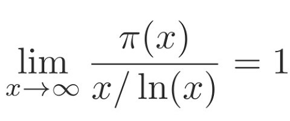
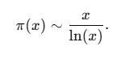

Statement
Let π(x) be the prime-counting function defined to be the number of primes less than or equal to x, then the limit of the quotient of the two functions π(x) and x /log x as x goes to infinity is 1
known as the asymptotic law of distribution of prime numbers.
Main idea
The Prime Number Theorem (PNT) describes the asymptotic distribution of prime numbers among positive integers. Its main idea is that the density of prime numbers decreases as numbers get larger.
Historical context
The theorem was conjectured in the 18th century by mathematicians such as Gauss and Legendre, based on numerical evidence.
It was rigorously proven independently by Jacques Hadamard and Charles-Jean de la Vallée-Poussin in 1896, using tools from complex analysis, particularly properties of the Riemann zeta function.
Proof sketch
The idea is that there is a connection between the Zeta Function and primes, and using the Euler product formula.
Using the analytical properties of the Riemann zeta function, showing that the function has no zeros on the real line Re(z)=1
Then using that the distribution of primes is realted to the behavior of 𝜁(z) near z=1
Finally Use a Tauberian theorem to link the asymptotic behavior of a series to its terms.
Specifically, deduce from the properties of ζ(s) that:
